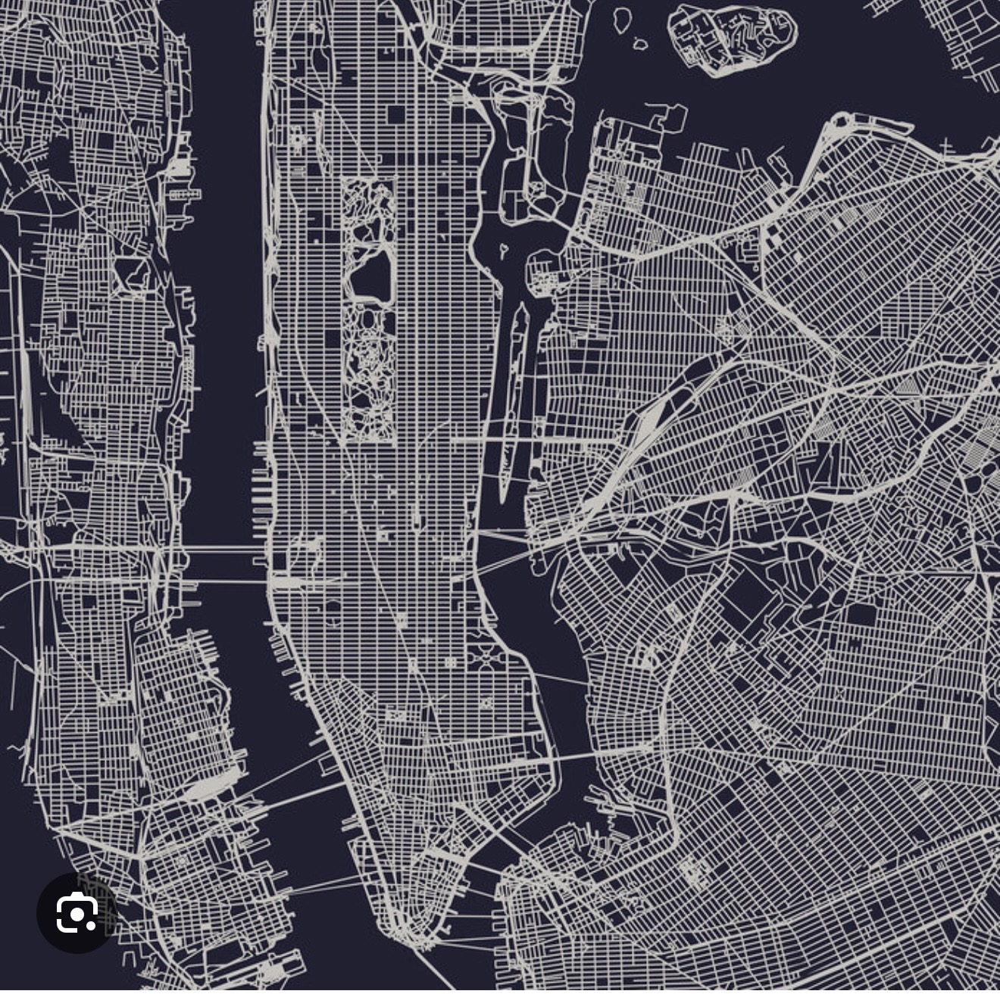

Report: Unmasking Variables: A Descriptive Analysis of Gun Violence Correlates in Manhattan
Motivation
Gun violence is a persistent public health crisis in the United States. In New York City, for example, we had the Midtown Manhattan mass shooting in July 2025. It showed us that even our busiest, most protected neighborhoods are impacted by gun violence. We set out to perform a descriptive exploration of neighborhood factors, geographic, and temporal factors that are potentially positively or negatively associated with firearm shootings in Manhattan, NYC.
Questions
Questions we had about patterns that can be found in Manhattan shootings were:
- Does lighting in the area from street lamps influence shooting rates?
- Does time of day influence shooting rates?
- Does time of year and/or the COVID-19 pandemic influence shooting rates?
- How do the social/environmental conditions of each region influence shooting rates?
- Does location influence shooting rates?
- Does victim gender influence shooting rates?
- How do demographic characteristics and location patterns relate to the fatal shooting incidents?
Discussion
Location-based patterns discussion

Across all five NYC boroughs, Brooklyn and the Bronx consistently show the highest shooting counts, together accounting for the majority of incidents citywide, while Staten Island has the fewest. When examining location type, whether shootings occur inside or outside, we observe that outside incidents outnumber inside incidents across all boroughs and time periods. This pattern suggests that street-level exposure may be a meaningful factor in shooting risk. The Poisson regression model confirms that shooting counts vary by location type, borough, and victim race. Inside locations show lower shooting rates compared to outside locations. Borough-level differences remain significant after adjusting for location type and victim demographics, with Brooklyn showing particularly elevated counts relative to the Bronx. However, this analysis uses aggregated count data and cannot make individual-level inferences. Important confounders such as population density, socioeconomic conditions, and policing patterns are not included in the model, and the Poisson distribution may not fully account for overdispersion in the data. When examining the interactive maps, both inside and outside shootings cluster in similar geographic areas within each borough, suggesting that neighborhood-level factors, rather than indoor/outdoor setting alone, drive the spatial concentration of gun violence. Overall, the finding highlights geographic and situational patterns rather than causal effects.
Fatal shooting discussion
At the geographic level, fatality proportions were remarkably consistent across boroughs, ranging only from 0.18 to 0.21. This suggests that location does not strongly shape whether a shooting becomes fatal, even though total shooting counts differ widely across areas.
At the individual level, the regression results show clearer differences. Younger victims have significantly lower odds of death, while older victims have higher odds. Race also showed meaningful variation, with Black and Other-race victims having lower odds of fatality compared with White victims. Although these results appear to contrast with widely documented patterns in firearm mortality, this discrepancy may reflect the fact that our analysis focuses exclusively on fatal shooting incidents. The dataset may include deaths such as suicides, which could shift the distribution of fatal outcomes and contribute to the higher odds observed among White victims. Victim sex did not influence fatality risk.
Taken together, these findings indicate that fatal outcomes vary more by individual characteristics than by geography.
Green space discussion

For census tracts that contain park acreage, the highest densities of shootings per park acre were concentrated in Harlem and Upper Manhattan/West Harlem. When examining all census tracts—regardless of whether a park is present—we observe that Upper Manhattan, including Harlem and Inwood, experiences a higher number of shooting incidents relative to mid- and lower-Manhattan census tracts. Across all tracts, park acreage and the number of shooting incidents are positively correlated, suggesting that the presence of parks may be moderately associated with higher shooting counts. However, this pattern is likely influenced by substantial data limitations: many parks could not be successfully geocoded, and parks spanning multiple census tracts were not fully accounted for, leading to probable underestimation of the true relationship between green space and violence. This association may also reflect uncontrolled factors such as population density or tract size.
When restricting the analysis to only census tracts with parks, the correlation between total park acreage and shootings per acre becomes negative, which is consistent with prior literature suggesting that green space may have a protective effect against gun violence. Still, this within-tract analysis is subject to selection bias and may overstate the magnitude of the association. Overall, our findings are descriptive and highlight spatial patterns rather than causal effects.
Unlit street lamps discussion
Our analyses consistently show that census tracts with more unlit street lights experience higher shooting rates. This association appeared in both cross-sectional and longitudinal models and remained significant during both daytime and nighttime, with slightly stronger effects at night. Spatial patterns further support this relationship, as areas with higher counts of unlit lights also showed greater concentrations of shootings. Although the effect size per unlit light is modest, accumulated lighting deficiencies within neighborhoods may meaningfully elevate shooting risk. These findings suggest that improving street-lighting infrastructure may be a practical component of strategies aimed at reducing community violence.
Time discussion

We see a trend in shootings where they tend to occur at night, during the weekend, and during periods of the year (the winter and the summer) when vacations/time off work are more likely to occur. This indicates that, temporally, shootings are far more likely to occur outside of standard working hours (9am - 5pm on weekdays), and that trends in these areas are based on when individuals are either occupied or when they have free time. It is likely that the temporal pattern of shootings is the result, and not the cause, of factors that influence whether a shooting takes place. The spike in shootings during the COVID-19 pandemic supports this theory, as there was an increase both in those who became unemployed and those who started working from home/saw their working hours reduced, causing an increase both in free time and in the shooting rate. Future testing to determine whether this theory is accurate could focus on the interpersonal element of shootings and in what circumstances they took place, and whether those circumstances are connected to that individual’s free time.